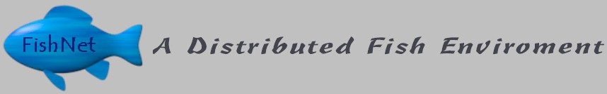

The FishNet was created as a way for SigOps members to demonstrate the operating systems they have individually written from /scratch. The DFP (Distributed Fish Protocol 2.1) was developed by SigOps for this reason. The point of this project, however, is not to create just a distributed fishtank, but to demonstrate how these original operating systems can work together as well as with established environments. Although at first glance the graphics may be the most impressive component, try to imagine what lies under the surface... Each person had to create a complete environment for the system. Everything that can be taken for granted when you code had to be designed and implemented. From virtual memory subsystems to network stacks, everything is hand-crafted. Most of these systems are fully 32-bit multitasking operating systems, however, there is a huge variety in design philosophies. Each person has incorporated their own method of loading and executing applications, memory management, protection schemes, inter-process communication, etc...
Check out the EOH edition of ACM's Banks of the Boneyard newsletter for more information, as well as brief descriptions about some of the operating systems. Also, make sure to visit our homepage, complete with an online workshop of how to "Roll your own OS."
http://www.acm.uiuc.edu/sigops

March 1998 - This has been a SigOps presentation.
No operating systems are affiliated with SigOps or ACM@UIUC